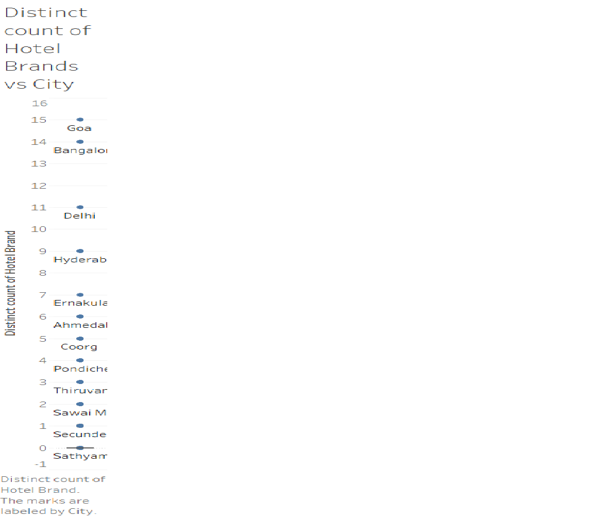

I have used two datasets from Kaggle.com here namely indian-hotels-on-goibibo and india-trade Data.The dataset "indian-hotels-on-goibibo" gives details of different hotel brands present in India while The dataset "india-trade-data" gives the details regarding the imports and exports of different commodity in different countries.
Q1) Which state has the total number of room counts more than 2500?
A1) The states which have more than 2500 rooms are Rajastahan, Maharashtra, Karnataka, Tamil Nadu, Kerela, Andhra Pradesh, Uttar Pradesh, Uttarakhand, Goa, Gujarat, Himachal Pradesh, Delhi, Madhya Pradesh and Haryana.
Description1) I have drawn the visualization in the form of "treemaps" chart between "State" and the "Sum(Room Count)" which will give the sum of total number of rooms in the different states and applied the filter "Range of Values" to be more than 2500. This filter will rule out all the states which have less than 2500 hotel rooms. I have used this representation because it would give the viewer all the State name in the form of map which his brain easily interpret as human brain is very habitual to see States and Countries in the form of maps.
Q2) Which hotel brands lies in between the latitude ranges from 30.0000 to 40.0000?

A2) The hotel brands which are available in between the latitudes 30.0000 and 40.0000 are Null, Awesome Stays, Camp Chrysalid, Carlson Rezidor, Chevron Group, Choice Hotels, Citrus Hotels, Golden Tulip, HPTDC, ITC, Leisure Hotels, Pine Spring, Sterling Group of Hotels, The Oberoi Group, Treebo Hotels, UNA Group and WelcomHeritage.
Description2) I have drawn a "horizontal bars" chart between "Hotel Brand" and "Latitude" and applied the filter in Latitude to be from 30.0000 to 40.0000. This filter help me to rule out all the hotels brands which are outside this latitude region. After this I have selected the legend option "map"(which is under "Marks") instead of "bar" to get the exact latitude of different hotels from different brands in the specified latitude region(30.0000 to 40.0000) in the form of position instead of bar which is very easy to comprehend.
Q3) In which City there are maximum number of distinct hotel brands situated?
A3) Goa is a place where maximum number of distinct hotel brands situated.
Description3) I have drawn a "box-and-whisker-plots" chart between "CNTD(Hotel Brand)" which will give the total number of distinct Hotel Brands present in each city and "City" and applied "label"(under Marks Options) over city which will give the name of city as a label corresponding to each point which depicts the total number of distinct hotel brand present in one city. I used this chart because just by seeing the graph, I as a viewer come to know the answer of the question effortlessly.
Q1) Which is the country with maximum import and minimum imports?
A1) Country with maximum and minimum number of imports are United Arab Emirates(U ARAB EMTS) and Curacao respectively.
Description1) I have drawn "side by side bars" chart between "SUM(Value(2018-2010 Import))", SUM(Value)" and the "Countries" and applied the filter for getting the values in increasing order. This filter made everything very easy because now the first country in the graph will have the minimum import and the last country will have the maximum import.
Q2) Which commodity is imported for the maximum amount?
A2) The commodity which is imported for the maximum amount is MINERAL FUELS, MINERAL OILS AND PRODUCTS OF THEIR DISTILLATION; BITUMINOUS SUBSTANCES; MINERAL WAXES".
Description2) I have drawn "horizontal bars" chart between "Commodity" and the "Import Values" and applied the filter to get the values in decreasing order. This filter help me in immediately recognizing the answer of this particular question.
Q3) In which year Switzerland has maximum import?
A3) Switzerland has the maximum import in the year 2017.
Description3) I have drawn the "lines(continuous)" chart between "Country", "SUM(Value)" and the "Year" and then selected "Keep Only" option for Switerland. Now in the legend option(which is under Marks) I selected "Pie" to figure out the answer easily by judging the position of the points.
I started this assignment by testing different datasets from Kaggle.com. I asked simple question to improve my understanding about different visualization techniques. After this I applied different filters and legends to understand different type of charts efficiently. When I acquired the basic knowledge then I started working on my assignment and learnt a lot about visualization methods by making simple and complex question sets for assignment.